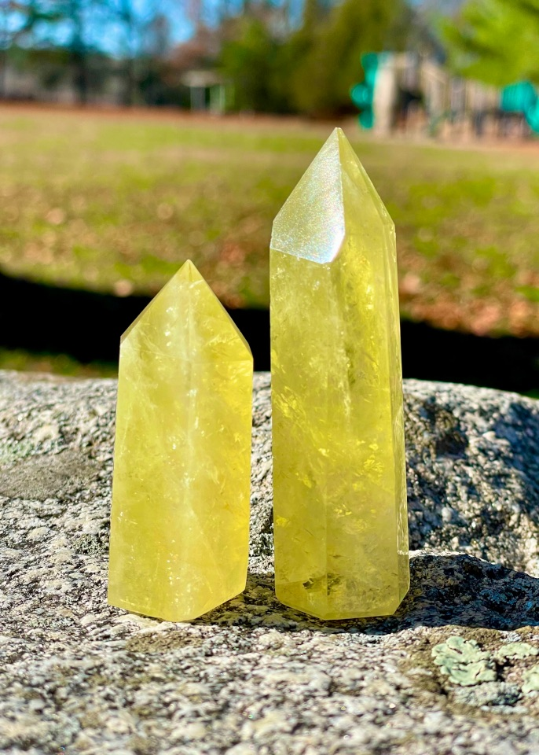

Lemon Quartz
Location Found
Lemon Quartz, also known as Oro Verde Quartz, is created by heating amethyst, yellow quartz, and iron together at extremely high temperatures. The amethyst and yellow quartz used to create lemon quartz are mined primarily in Brazil, although deposits of the heatable amethyst have also been found in Arizona.
Characteristics
Quartz is the best-known piezoelectric gem--that is, it can carry an electrical charge when exposed to an applied voltage, in response to pressure, or response to mechanical stressors. Quartz is also a pyroelectric gem--able to generate an electric charge through rapid states of temperature change. The colors of lemon quartz range from bright yellow to pale green: translucent, and the cause of color is heat and iron. It is a 7 on the Mohs scale of hardness.
Metaphysical Properties
Quartz is said to help structure, focus and amplify thoughts and information. It is also thought to transmit energy. Because the color yellow is associated with clarity, communication, and happiness, lemon quartz is believed to help balance and strengthen these aspects.
Used in meditation, lemon quartz is believed to filter out distractions, aid concentration, and open memory. It is also thought to reduce anxiety, bring in money or assistance in times of need, and decrease negativity. Advocates recommend it be used with the third eye and crown chakras.
For those who use crystals for healing, lemon quartz eases food and nicotine cravings, helps with diabetes, and encourages healthy recovery after illness or surgery.